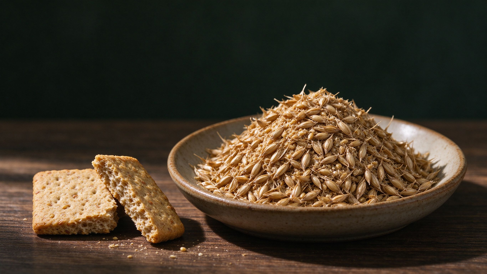
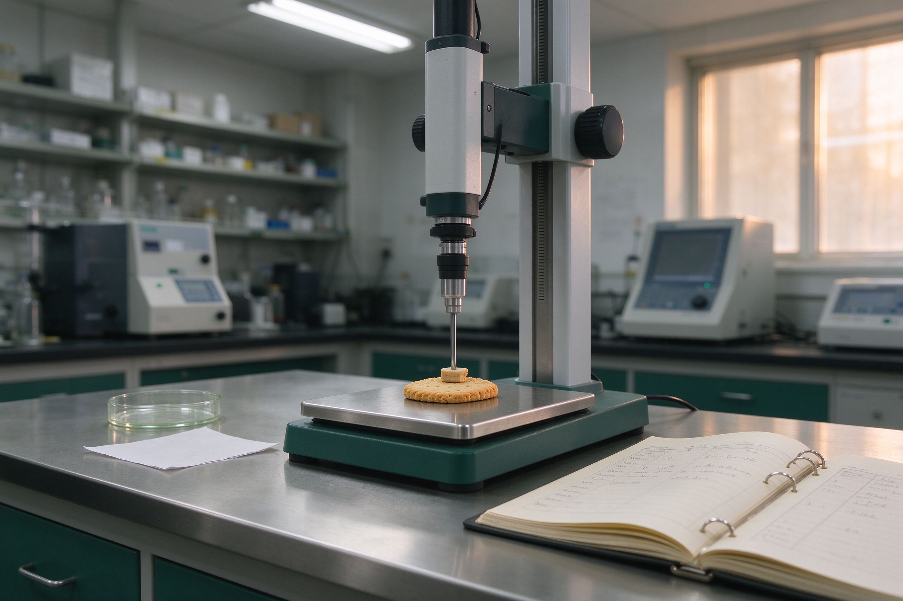

把啤酒厂的一堆麦糟，做成一块说得清功能的饼干。
以啤酒麦糟（BSG）为原料，用单因素实验加 Box-Behnken 响应面，把「麦糟添加量—油脂—糖」三者的交互作用建成模型，在感官可接受的前提下确定兼顾口感与功能的最优配方。

麦糟 → 饼干数据来源：Mussatto 等（2006）；国家统计局 2024 年规上啤酒产量 3521.3 万千升；Sana 等（2018）。年产生量按每 100 升啤酒约产 20 kg 湿糟折算。
为什么是这块饼干
资源、配料、法规三条理由，决定了这个选题的位置。
被低价处理的原料
每年数百万吨湿麦糟以每吨数百元流向饲料厂，甚至就地废弃。它不是垃圾，是被错配的原料。
纤维与蛋白正好互补
麦糟干基蛋白约 20%、纤维 45–70%，富含结合态酚酸；饼干却以精制面粉为主，纤维与蛋白都偏低。
有明确的法律依据
《反食品浪费法》第十五条要求提高食品加工利用率，为副产物转食品配料提供了直接依据。
12 个月怎么走
点击阶段查看工作内容与产出。进度状态以内部管理系统为准。
组员从这里开始
正式数据进系统，日常琐事用本地工具。
用一块饼干，验证一条副产物变配料的路径
课题全称：啤酒麦糟饼干的工艺优化及其品质特性与体外功能评价。
课题以啤酒麦糟（BSG）为对象，先用单因素实验与 Box-Behnken 响应面确定兼顾口感与功能的最佳饼干配方，再用二次多项式回归模型的方差分析识别显著因素与交互项，并以验证实验确认可靠性。
在此基础上系统评价最优饼干的质构、感官与理化品质，初评其体外抗氧化活性与 eGI。它要同时回答两件事：能不能做得好吃，以及好吃之后纤维、酚类与血糖响应有没有真的改善。
啤酒麦糟 + 低筋面粉
湿糟当日采收，制成麦糟粉后按比例替代面粉
单因素 + 响应面
Box-Behnken 三因素三水平，17 组试验
感官 · 质构 · 理化 · 功能
含 DPPH/ABTS 与体外 eGI 估算
12 个月 · 笃行楼 105
负责人 刘铭哲，原料由校内实训室供应
研究背景与意义
资源量、配料价值与法规依据，构成了课题的现实基础。
啤酒糟是糖化、过滤后剩余的麦芽皮壳与未溶解胚乳残渣，占酿造副产物总重的 85% 左右；每生产 100 升啤酒约产生 20 千克湿糟。2024 年我国规上啤酒产量 3521.3 万千升，据此测算湿麦糟年产生量在 700 万吨上下，绝大多数仍以低价流向饲料厂或就地废弃。
麦糟干基蛋白质约 20%、总膳食纤维 45–70%，富含以阿魏酸为代表的结合态酚酸。把它做成饼干，是把啤酒行业的负资产转化为高纤、高蛋白的功能性烘焙原料。
建立量化关系
系统建立「配方—品质—功能」的量化关系，为高纤维烘焙制品的配方设计提供可复用的方法。
可转化的产品路径
为啤酒副产物高值化提供技术可行、可落地的路径，契合循环经济与「双碳」目标。
研究现状：一条二十余年的配料替代史
按年份排列，只保留与本课题直接相关的关键节点。
Öztürk 等：曲奇中的替代上限国外
以 5%–25% 麦糟替代软质小麦粉，确认上限约 15%；超过后延展性与硬度显著劣化。
Mussatto 等：经典综述国外
系统总结麦糟的生成、特性与潜在应用，指出纤维与蛋白含量使其具备优质食品配料属性。
杜金华等：工业化配方专利国内
《一种高蛋白膳食纤维啤酒糟饼干及其制作方法》（ZL201010126356.1），给出完整配方与焙烤工艺。
Lynch 等：食品与健康视角国外
从健康角度综述麦糟作为功能配料的降糖、益生元与抗氧化潜力。
Heredia-Sandoval 等：20% 添加与 eGI
证明 20% 添加可在保持可接受结构的同时降低水解指数与 eGI（作者—年份标注）。
金钰博等：无糖麦糟饼干直接对标
相对面粉 49% 添加量开发无糖麦糟饼干，感官评分 95.02±1.12；21 天人体试食观察到血糖下降 6.60%、总胆固醇下降超过 10%。
以上为策划书正文引用的代表性研究；完整文献表（17 条）见策划书参考文献页。
研究目标与五项内容
目标一句话：定配方、验模型、评品质与功能。
研究目标
- 确定兼顾口感与功能的最优饼干配方。
- 以方差分析识别显著因素与交互项，并用验证实验确认可靠性。
- 系统评价质构、感官与理化品质，初评体外抗氧化与 eGI。
研究内容
- 麦糟粉预处理与基本成分分析（水分、蛋白、脂肪、灰分、纤维）。
- 单因素实验：以面粉质量为基准设置 6 个添加水平（0–30%）。
- Box-Behnken 响应面优化：三因素建模并求解最优配方。
- 品质特性评价：TPA、色差、理化指标与感官评定。
- 体外功能评价：总酚、DPPH/ABTS 清除率与 eGI 估算。
四个创新点
原料、方法、优化与评价四个层面各有一处推进。
低值副产物做核心配料
实现「纤维—蛋白—酚酸」的营养重构，属「变废为宝」型选题。
三元协同优化
单因素扫描 + 响应面，对「添加量—油脂—糖」做协同建模。
闭环求解配方
筛选—建模—方差分析—验证实验，结论既有统计依据又经实验复核。
配方—品质—功能联动
在同一最优配方上完成质构、感官、理化与体外功能评价。
预期成果
三项基本成果，另有两项弹性目标。
结题研究报告
完整的研究过程、数据与结论。
最优配方与工艺参数
经响应面优化并通过实验验证。
学术论文 1 篇
投稿食品类中文核心期刊。
专利与竞赛（弹性）
条件允许时申请 1 项专利并参加双创竞赛。
主要依据
站内数字与结论的出处，便于核对。
- Mussatto S, et al. Brewers' spent grain: generation, characteristics and potential applications. Journal of Cereal Science, 2006.
- 国家统计局. 2024 年中国啤酒产量数据（规上企业 3521.3 万千升）。
- Sana I, et al. Composition and Nutrient Value Proposition of Brewers Spent Grain. Journal of Food Science, 2018.
- 全国人民代表大会常务委员会. 中华人民共和国反食品浪费法，2021-04-29。
- 金钰博, 等. 无糖麦糟饼干的工艺开发及降血糖血脂功效评价. 中国酿造, 2026, 45(3): 279–284.
13 个步骤，4 个工作包
主线：预处理 → 单因素 → Box-Behnken 优化与验证 → 品质与功能评价 → 数据分析。每一步都有明确输入与输出，便于按周对齐。
技术路线
步骤编号即执行顺序。
前期准备
1–3工艺优化
4–8品质评价
9–11总结
12–13六个关键方法
参数口径统一，换人做也一致。
Box-Behnken
三因素三水平、17 组试验含 5 中心点，以综合感官评分为响应值。
TPA 测试
P/36R 探头，测前 2.0、测中 1.0、测后 1.0 mm/s，记硬度与脆性。
L*a*b* 色空间
色差计测明度与红绿、黄蓝偏向，用于比较表观颜色。
DPPH / ABTS
70% 乙醇提取，分别于 517 nm、734 nm 测吸光度算清除率。
体外 eGI 估算
体外淀粉消化法测 HI，eGI = 39.71 + 0.549 HI，每项 3 次重复。
加权评分
10 名培训评审员，满分 100，五个项目加权，细则见策划书表 4。
检测项目与仪器
全部落在国标与公开文献口径。
| 检测项目 | 方法 | 依据 |
|---|---|---|
| 水分 | 直接干燥法 | GB 5009.3 |
| 蛋白质 | 凯氏定氮法 | GB 5009.5 |
| 粗脂肪 | 索氏抽提法 | GB 5009.6 |
| 总膳食纤维 | 酶重量法 | GB 5009.88 |
| 菌落总数 | 平板计数法 | GB 4789.2 |
| 饼干成品 | 感官与净含量 | GB/T 20980 |
| eGI | 体外淀粉消化法 | 柳芳伟等（2021） |
体外 eGI 为估算值，不等同于人体血糖试验结论。
| 仪器设备 | 用途 |
|---|---|
| 电热鼓风干燥箱 | 麦糟干燥 |
| 粉碎机 / 标准筛 | 粉碎与粒度分级 |
| 远红外烤箱 | 饼干焙烤 |
| 质构仪 | TPA 质构分析 |
| 色差计 | L*a*b* 测定 |
| 紫外可见分光光度计 | 总酚与抗氧化 |
| 凯氏定氮仪 | 蛋白质测定 |
机时使用前在内部系统登记，避开本科实验课时段。
实验台现场
质构测试与感官评价是本课题最耗时的两段。

六阶段排期
按策划书表 5 的阶段划分。实际进度以内部管理系统的记录为准，这里只做对齐用。
| 阶段 | 月份 | 主要工作 | 节点产出 |
|---|---|---|---|
| 一 · 准备 | M1–M2 | 文献调研、方案细化、原料对接与预处理试做 | 实验方案、麦糟粉样品 |
| 二 · 单因素 | M3–M4 | 6 个添加水平试烤，确定各因素适宜区间 | 单因素数据表、区间结论 |
| 三 · 响应面 | M5–M6 | Box-Behnken 17 组试验、模型拟合与方差分析 | 回归模型、显著性结论 |
| 四 · 验证 | M7–M8 | 最优配方求解、3 次平行验证、换批次复做 | 最优配方与工艺参数 |
| 五 · 评价 | M9–M10 | TPA、色差、理化、感官与体外功能评价 | 品质与功能数据集 |
| 六 · 总结 | M11–M12 | 数据统计、结题报告撰写、论文投稿与归档 | 报告、论文、原始数据 |
六个人怎么分
一人一块，接口写清楚；跨块的事项在周会上定。
刘铭哲
总体设计、进度把控、对外协调，署名材料的第一责任人。
原料组
湿糟采收、干燥粉碎过筛、基础成分测定；管原料批次与留样。
工艺组
单因素与响应面试验执行、焙烤参数记录、配方求解与验证。
检测组
TPA、色差、理化指标；仪器机时预约与数据录入。
评价组
评审员组织与培训、评分表回收；总酚、DPPH/ABTS 与 eGI。
数据组
统计分析与作图、报告与论文撰写、原始数据归档备份。
感官评分计算器
按策划书表 4 的加权口径现场算分：形态 20、色泽 20、滋味 30、组织 15、整体 15，满分 100。算完请在评价系统里正式录入。
系统入口
两个系统部署在同一台服务器，按端口区分，需账号登录。地址只在组内流转。
两个系统账号由负责人统一开通，不在公开渠道登记；离职或调组后请通知管理员停用。
外部常用资源
14 个公开站点，按用途分组。核验日期 2026-09-29。